ONE OK ROCK - Renegades (Piano) Japanese Version [OFFICIAL VIDEO]
ONEOKROCK
觀看次數 : 116萬次 ‧ 10個月前
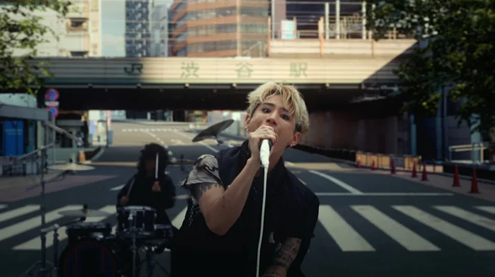
ONE OK ROCK × Monster Hunter Now -“Make It Out Alive”Mu...
ONEOKROCK
觀看次數 : 2300萬次 ‧ 8個月前
Best Popular Songs Of 2022
jjyy8
觀看次數 : 1.6萬次 ‧ 1年前

陳忻玥 Vicky Chen - 煙幕 (Smokescreen)｜ 彩虹六部曲【第...
SKRpresents 陶山音樂
觀看次數 : 4933萬次 ‧ 5年前
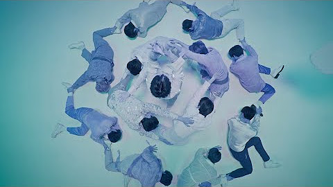

SEVENTEEN - 「舞い落ちる花びら (Fallin’ Flower)」パフォーマン...
SEVENTEEN
觀看次數 : 790萬次 ‧ 3年前

綠繡眼Zos - 願溫柔的妳被世界溫柔以待(Official)
綠繡眼Zos
觀看次數 : 324萬次 ‧ 4年前
ONE OK ROCK - Let Me Let You Go [Live Documentary Video]
ONEOKROCK
觀看次數 : 520萬次 ‧ 10個月前
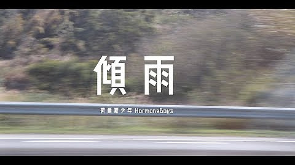

荷爾蒙少年 Hormone Boys - 傾雨 Pouring Rain (Official Music Video)
荷爾蒙少年Hormone Boys
觀看次數 : 65萬次 ‧ 5年前
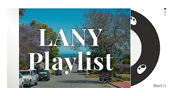

| LANY playlist | 여보세요? 나 지금 출발했어. 잠시만, 노래 좀 틀고
김집중
觀看次數 : 40萬次 ‧ 1個月前
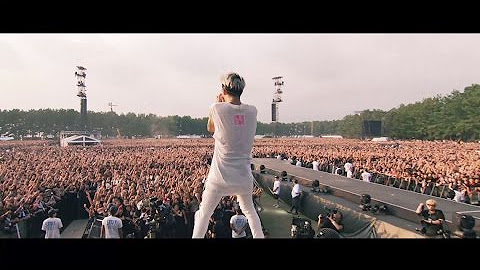
ONE OK ROCK - Taking Off [Official Video from Nagisaen]
ONEOKROCK
觀看次數 : 109萬次 ‧ 3年前
2小時的吉卜力之夏
ninia
觀看次數 : 2.6萬次 ‧ 6年前
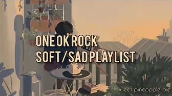

ONE OK ROCK Soft/Sad playlist
GuoGuo
觀看次數 : 1,314次 ‧ 2個月前
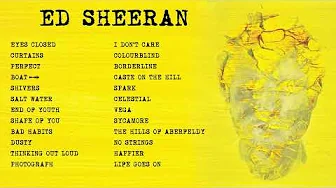

Ed Sheeran | Top Songs 2023 Playlist |
niham78
觀看次數 : 245萬次 ‧ 3個月前

ONE OK ROCK日本搖滾天團來襲!! TAKA竟喜歡這種類型!?
驚奇玩起來 AmazingTalker Show
觀看次數 : 73萬次 ‧ 1天前
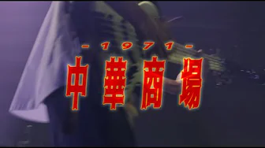

Hormone Boys & 修齊 - 中華商場1971 (Live)
荷爾蒙少年Hormone Boys
觀看次數 : 3.6萬次 ‧ 10個月前
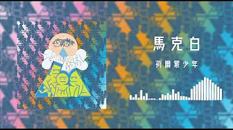
荷爾蒙少年 Hormone Boys - 馬克白(Official Audio)
荷爾蒙少年Hormone Boys
觀看次數 : 2萬次 ‧ 10個月前

Imagine Dragons - Demons (cover by 持修 chihsiou)
持修ChihSiou
觀看次數 : 24萬次 ‧ 3年前
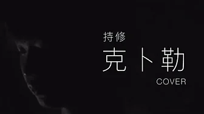
持修-克卜勒 cover/原唱：孫燕姿
持修ChihSiou
觀看次數 : 83萬次 ‧ 2個月前

蔡依林 Jolin Tsai《腦公 Hubby》Official Music Video
蔡依林 Jolin Tsai
觀看次數 : 3457萬次 ‧ 6年前
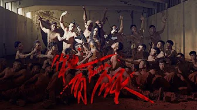
蔡依林 Jolin Tsai《你也有今天 Karma》Official Music Video
蔡依林 Jolin Tsai
觀看次數 : 4590萬次 ‧ 4年前